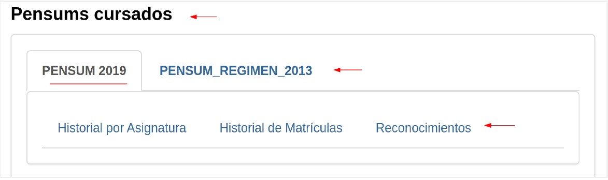
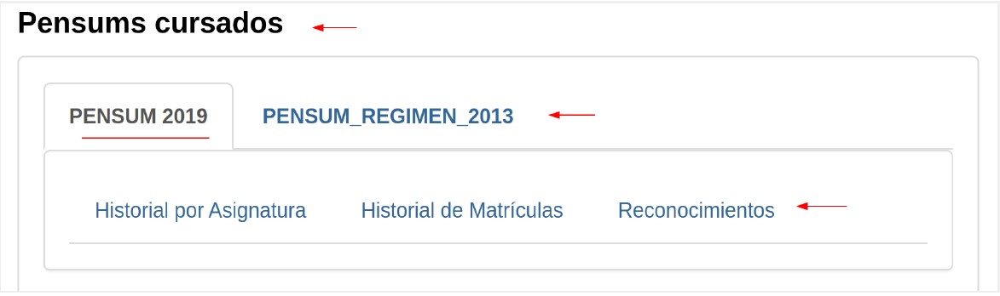
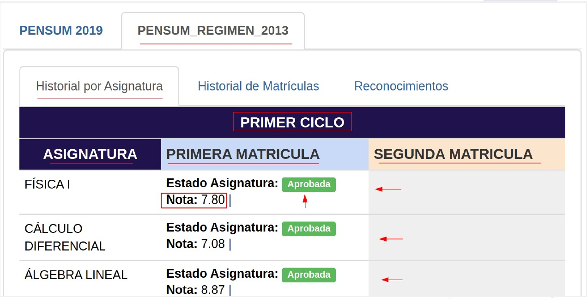
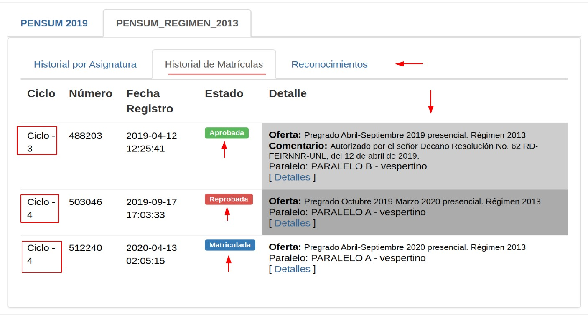
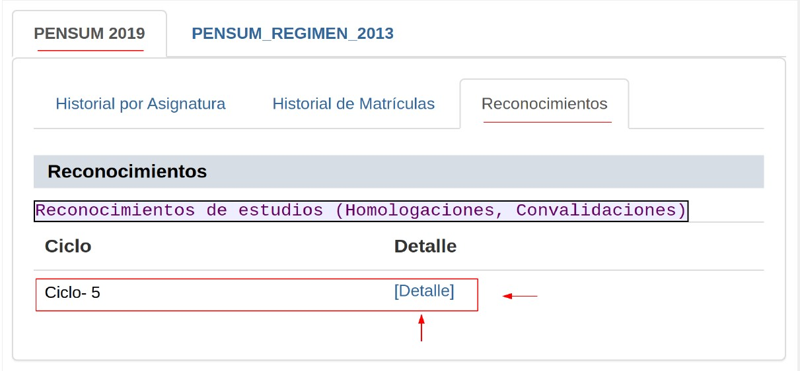

Información
En esta sección el estudiante puede elegir el pénsum deseado y posteriormente seleccionar la pestaña de la información que desee, por ejemplo él [Historial por Asignatura], [Historial de Matrículas] o [Reconocimientos].

En esta sección el estudiante puede elegir el pénsum deseado y posteriormente seleccionar la pestaña de la información que desee, por ejemplo él [Historial por Asignatura], [Historial de Matrículas] o [Reconocimientos].

El estudiante visualizar el ciclo, la asignatura, número de matrícula, estado de la matrícula, nota y asistencia en caso de ser matrícula aprobada o reprobada y si la matrícula está en estado de matriculada se muestra el número de matrícula.

El historial de matrículas permite al estudiante visualizar los ciclos cursados con el respectivo detalle, número de matrícula, fecha de registro de la matrícula, estado de la matrícula y detalle y la nota obtenida.

El sistema cuenta con un registro de reconocimientos estudios (ajuste de pénsum, convalidación u homologación). En la sección de [Pénsums cursados], dirigirse a la pestaña [Reconocimientos]. El alumno podrá visualizar las asignaturas reconocidas con su respectiva calificación, caso contrario el espacio se mostrará vacío.

Obra publicada con Licencia Creative Commons Reconocimiento No comercial Compartir igual 3.0